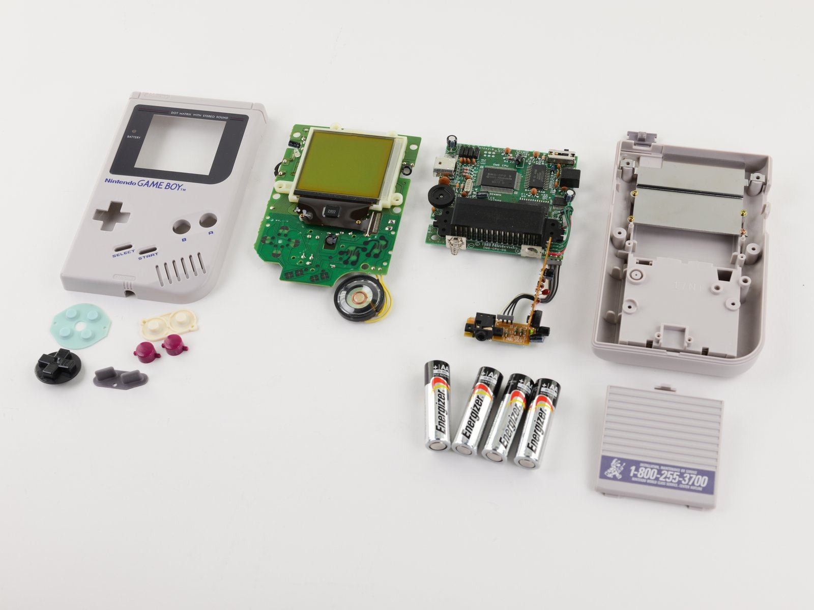
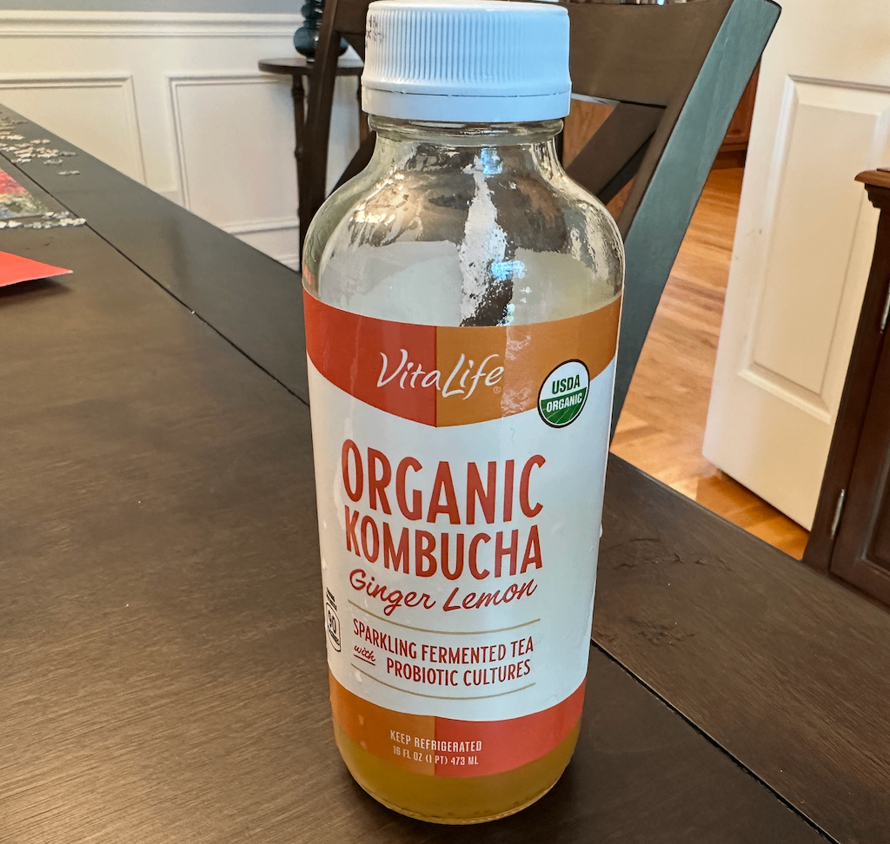
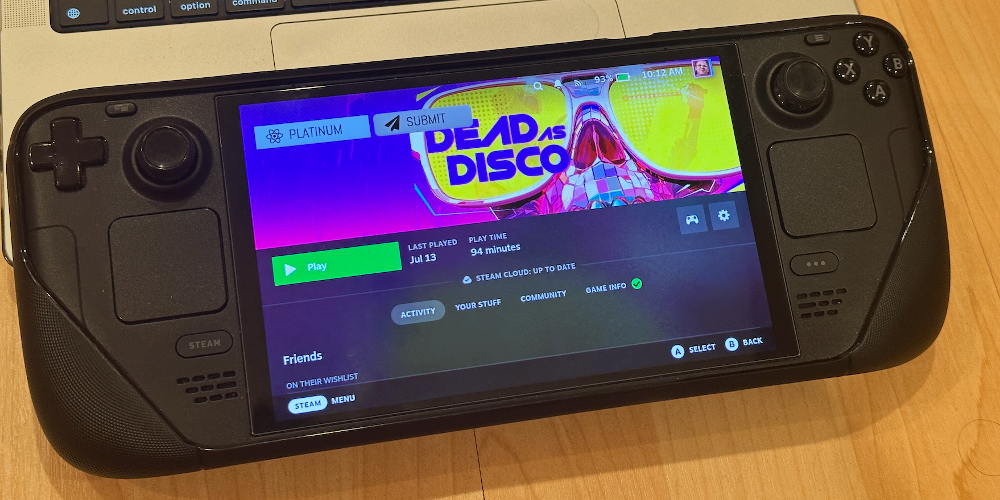

{kind=link}
{kind=link}

Teardown: Game Boy vs. Game Gear
The handheld with the worse screen won the format war.
Read spotlight →Guiding questionHow does product analysis and evaluation inform various stakeholders and aid in a product's future development?
Being able to say precisely identify what's wrong with something is a skill, and perhaps more rare than you'd think. Most criticism of products or processes stops at "this is annoying", which is valid, but not actionable. You may feel that a movie is boring, or a game isn't fun, or a subject is not interesting, but those feelings provide little information that can be used to improve things. Product analysis is the process of turning reactions into something specific enough to address and fix, and has been involved in nearly every improvement made to a product.
Constructive discontent is my favourite idea in this topic, partly for the name. It refers to the refusal to accept that things are simply the way they are, coupled with the discipline to explain what could be different. The tools and structure features, like SWOT, Porter's Five Forces, and reverse engineering, help to make that discontent systematic rather than random, on your own work and products designed by others. It can be challenging to find the flaws in something something you designed yourself, but developing that skill can help improve your work considerably.
Students must be able toDiscuss the purpose of a product analysis exercise and why it is important for product design development.
The main goal of product analysis and evaluation is to deeply understand how all the different parts and features of a product work together. We look at what makes a product functional (does it work well?), appealing (do people want to use or buy it?), and competitive (how does it compare to similar products?). Through this careful examination, we discover actionable insights we can use to make real improvements or develop new solutions. In simpler terms, product analysis helps you figure out: What makes this product work? Why do people use or buy it? And how does it stack up against the competition?
"Actionable insights" are specific, practical recommendations that can be implemented to improve the product. For example, a thorough analysis of an application might find that users rarely use a particular feature because they weren't aware of it, rather than avoiding it by choice. Simply looking at how many people use each feature can provide useful data, but to find actionable insights we'd have to look closer. (A specific example of this is MacOS quick actions. Do you use quick actions?)
Five analytical approaches used in product analysis:

Product analysis enables designers to learn from successes and shortcomings, reexamine problems, explore new technologies, and iterate products into more appealing, user-aligned solutions.
Students must be able toIdentify the various stakeholders, such as users, manufacturers and engineers, that will help in any future development of a product.
Bringing a wide range of stakeholders into product analysis matters because something that feels obvious and easy to one group can be a genuine obstacle for someone else. Involving multiple perspectives ensures the final solution is technically refined, aesthetically pleasing, commercially viable, and broadly accessible.
A stakeholder is any person or group that has an interest in or is affected by the product. Involving them in the analysis process helps ensure that the final solution meets their needs and expectations. You are welcome to look up the specific history of the term 'stakeholder', but it isn't terribly interesting. I encourage my students to think of it as similar to 'shareholder' or 'partner', in that both of those terms refer to people who will benefit if a company or project succeeds.
| Stakeholder | Their contribution to product analysis |
|---|---|
| Consumers | share real-world-use feedback, such as how well the product works and how easy or difficult it was to use. They can share usability issues, express thoughts about the value of the product, and discuss their expectations. |
| Product Development Managers | Gather and process data from all relevant sources to assist in further product development. They can act as a bridge between different stakeholder groups. |
| Product Designers | Typically focus on product aesthetics, user experience, function, opportunities for innovation, and sustainability. They can also evaluate whether the product's form effectively communicates its function. |
| Engineers | Weigh in about whether the product is possible, and whether it would be more feasibile with different materials or revisions to manufacturing. |
| Marketing Staff | Review and analyse the market for the product, identifying trends, competion, pricing strategies, promotional opportunities, and where to sell. |
| Customer Support Staff | Listen directly to customers and provide information on recurring issues and potential areas of improvement. |
| Business Leaders | Above all focus on making sure the product delivers a return on investment, but also that it is in alignment with strategic goals, company values, and the approved project budget. |
Students must be able toAnalyse a product using a SWOT analysis based on function, performance, usability, features and materials.
A SWOT analysis is a structured framework with four quadrants. Strengths and Weaknesses are internal (within the product or organisation); Opportunities and Threats are external (from the market, technology, or regulatory environment).

| Quadrant | Definition | Steam Deck Example |
|---|---|---|
| Strengths (internal, positive) | Valued features: aesthetics, functionality, technological superiority, brand reputation | "It just works!", seamless integration with Steam library, highly rated aesthetics and ergonomics |
| Weaknesses (internal, negative) | Limitations: resource constraints, pricing, intuitiveness, market placement | Aging hardware, directive to ensure device doesn't losemoney, lingering compatibility and launcher issues |
| Opportunities (external, positive) | Market trends, new technologies, growing segments | Growing demand for handheld devices and portability, large potential audience of parents and 'former hardcore gamers', massive catalog of games which can be optimized and marketed |
| Threats (external, negative) | Competitors, changing regulations, economic downturns, supply chain issues | Growing number of stronger handheld devices, memory and storage crisis, modern games require more and more power to run |
Let's imagine that we've opened a new restaurant called 'Pizza Dog' (Named after one of my first kitchen inventions) and want to do a SWOT analysis. My concept is a vegetarian pizza and hot dog restaurant, with video games and other entertainment, making it a blend of restaurant and hang-out zone.
| SWOT | Pizza Dog Analysis |
|---|---|
| Strengths | Unique menu, without competitors; strong brand identity; high quality ingredients; fun atmosphere |
| Weaknesses | Vegetarian food is less desirable to many customers; large numbers of delivery customers who don't form the same emotional connection as dine-in patrons; most offerings are best eaten 10-15 minutes after preparation, but many deliveries take 20-30 minutes to arrive |
| Opportunities | Develop menu items that travel better; provide packaging and free items that will help build connections with delivery-only customers; hang-out space can be used for events to bring in more customers |
| Threats | Menu can be copied and iterated on easily; more established competition could produce the same food at lower cost due to better deals with suppliers |
Porter's Five Forces (Michael Porter, 1979) complements SWOT by analysing competitive intensity at the industry level: (1) competitive rivalry, (2) supplier power, (3) buyer power, (4) threat of new entry, and (5) threat of substitution. While SWOT analyses a specific product, Five Forces analyses the whole industry.
Dumpalicious delivers hot dumplings by drone, straight to your window, in about six minutes. Twelve observations about the business are sitting in the bank. Drag each one into the quadrant where it belongs, or select it and then select a quadrant. Watch the axis labels: the trap in SWOT is putting an external factor in an internal quadrant.
Students must be able toUse data generated from relevant testing and/or reverse engineering to identify areas of the product that require improvement and to determine how well the product meets the needs of the user.
Systematic testing and reverse engineering generate objective data that replaces guesswork in product evaluation.
Testing methods:
| Test type | What it measures | Output |
|---|---|---|
| Usability testing | How easily users can operate the product; error rates; time-on-task | Identification of confusing interfaces, missing affordances |
| Performance testing | Whether the product meets specified functional requirements (speed, load, accuracy) | Pass/fail against specification; quantitative comparison to competitors |
| Materials testing | Tensile strength, hardness, fatigue life, corrosion resistance | Material suitability; predicted service life |
| Customer review analysis | Real-world issues reported by actual users at scale | Recurring pain points; issues that lab testing misses |
Reverse engineering as analysis (disassembly / teardown): Physically deconstructing a product reveals component materials, manufacturing processes, assembly sequence, and structural decisions. Used by designers to understand how a competitor solved a design problem, or to identify failure modes in their own product. (For the full reverse engineering process, see B4.1 Production Systems, objective 4.1.5.)
Benchmarking compares a product's performance, features, and design against leading competitors or industry standards. It equips designers with awareness of prevailing standards, emerging aesthetic trends, and potential avenues for market differentiation.

The handheld with the worse screen won the format war.
Read spotlight →Students must be able toCompare competing and similar products to identify opportunities for further product improvements.
The relationship between weaknesses and opportunities is central to iterative design. A weakness in one product is an opportunity for the next version, or for a competitor. A frequent modern example is 'battery life'. So many iterative products are advertised as having better battery life than their predecessors, or 'our longest lasting battery yet', and so on. Battery life is a great feature to mention for sales because people who have older devices, especially phones, may have few other issues with their device, but almost certainly have less battery life than they did when their device was newer. This table shows the capacity of all iPhone batteries, and makes a compelling case that 'battery life' has always been identified as a weakness
Three possible decisions arising from product analysis:
| Decision | When to choose it | Triggers |
|---|---|---|
| Invest in improvement | Addressable weaknesses; clear market opportunities; stakeholder demand | SWOT shows fixable weaknesses + relevant opportunities; engineers confirm feasibility |
| Leave unchanged | Strengths outweigh weaknesses; no compelling opportunities; stable market position | Benchmarking shows product leads competitors; no significant user complaints |
| Discontinue | Irreparable weaknesses; strong threats; declining market; no viable opportunities | Multiple stakeholder groups report persistent issues; technology obsolescence confirmed |
Value proposition mapping helps designers articulate what makes a product worth buying, and where a competitor's value proposition exceeds their own. This identifies specific improvement targets rather than vague dissatisfaction.
Customer reviews are an important analysis input: they reveal at scale what real users experience, including failures that only emerge after extended use, which lab testing cannot replicate.
Students must be able toIdentify areas where a product is not meeting the needs of its users.
Constructive discontent is defined as "the ability to identify, articulate and address shortcomings in an existing product without simply criticising." It is a mindset that challenges the status quo while offering pathways to improvement: criticism with a purpose.
| Simple criticism | Constructive discontent | |
|---|---|---|
| Statement | "This product is terrible" | "This product fails at X, which could be solved by Y" |
| Focus | Problem only | Problem + proposed solution |
| Effect on team | Demoralising | Action-oriented; motivates improvement |
| Result | Complaints without action | Actionable design brief for improvement |
Example: Knife Block: A designer applying constructive discontent would observe: "The knife block accumulates crumbs and bacteria at the bottom of the knife slots because it cannot be disassembled for cleaning. This is a hygiene issue that could be solved by designing a dishwasher-safe block with removable slot inserts." This becomes an actionable design opportunity, not just a complaint.
Constructive discontent drives iterative design: the cycle of observe > articulate shortcoming > propose improvement > prototype > evaluate is the engine of product evolution.
List three things about a product you use every day that mildly annoy you. Don't stop there: for each one, rewrite it in the "fails at X, which could be solved by Y" format from the table above. If you can't fill in a plausible Y, you probably haven't found the real problem yet, just a symptom of it.
Then swap with a partner and try to find the weak point in each other's Y: is the proposed fix actually addressable by design, or does it depend on something the designer can't control (cost the user won't pay, a supplier that won't change, a habit the market won't drop)?
If you need help choosing a product, consider something like Moodle, Meituan, your backpack, or the elevator.
Students must be able toDiscuss the purpose of a product analysis task and why it is important for product design development.
Product analysis is not an end in itself: it is the evidence base for design decisions. The full analytical cycle connects observation to action:
Why product analysis matters for design development:
The goal is products that are not only technically and aesthetically refined, but also commercially viable and broadly accessible to their intended users.
Ten questions covering the learning objectives for this topic. Select one answer per question, then click "Check all answers" to see your score and the explanations.
[4 marks] Explain what a SWOT analysis is and give one example for each quadrant, using a handheld games console as the product.
A SWOT analysis is a standard product analysis tool with four quadrants: Strengths and Weaknesses (internal), Opportunities and Threats (external). (1)
Note: any correctly classified example earns the mark. The key skill is separating internal factors, which are strengths and weaknesses, from external ones, which are opportunities and threats.
[6 marks] Explain why a diverse range of stakeholders is critical to the success of product analysis. Refer to at least four different stakeholder groups in your answer.
A diverse range of stakeholders matters because something that feels obvious and easy to one group can be a real obstacle for another. Involving several perspectives produces a wider range of ideas, makes the product more accessible, and builds support for the changes that follow, because people who were consulted feel heard. (1)
[5 marks] Explain what "constructive discontent" means and how it benefits the product design process. Use a specific example of applying constructive discontent to an existing product.
Definition: constructive discontent is the ability to identify, articulate and address shortcomings in an existing product without simply criticising it. It is criticism that comes with a proposed solution. (1)
Difference from simple criticism: Simple criticism says "this is bad." Constructive discontent says "this fails at X, which could be fixed by Y." This makes it actionable for design teams. (1)
Benefits: (any 2 × 1 mark)
Example: Traditional knife block. Observation: "Knife slots accumulate crumbs and bacteria because the block cannot be disassembled for cleaning: a hygiene problem." Constructive discontent framing: "Redesign the block with removable slot inserts that are dishwasher-safe." This is a design brief, not a complaint. (1)
[4 marks] Explain Porter's Five Forces model and give one example from the consumer electronics (smartphone) industry for each force.
Porter's Five Forces (1979) analyses competitive intensity and industry attractiveness. (One mark per force correctly named and applied, max 4.)
[6 marks] Analyse how product analysis and evaluation can help a design team decide whether to discontinue a product, invest in its improvement, or leave it unchanged. Refer to stakeholder input, SWOT analysis, and benchmarking.
Product analysis provides evidence for three strategic decisions: invest in improvement, leave unchanged, or discontinue. Decisions based on evidence rather than one stakeholder's opinion produce better outcomes. (1)
Stakeholder input: Customer support staff identify recurring pain points: if the same complaint persists (e.g., battery fails after 6 months), improvement is needed; if the flaw is inherent, discontinuation may be appropriate. Engineers identify whether the core technology can be updated cost-effectively; if not, discontinuation is indicated. Marketing teams identify whether the market segment is growing (invest) or shrinking (discontinue). (1+1)
SWOT analysis: a weakness that can be fixed, paired with a matching opportunity, points to invest. A handheld console with ageing hardware, sold into a growing market for portable gaming, is a clear case for a new version. If the weaknesses cannot be fixed and the threats are strong, the same analysis points to discontinue.
Benchmarking: If competitors offer equivalent performance at 30% lower cost and cost reduction is not feasible, the decision may be discontinue. If competitors lack a feature the product has and consumers value it, leave unchanged or increase marketing investment. If competitors introduce a new technology becoming standard, invest in adding it. (1)
Conclusion: Without analysis, companies might invest in products that should be discontinued, or discontinue products that could be saved with a targeted improvement. Evidence-based decisions (combining stakeholder input, SWOT, and benchmarking) produce commercially viable outcomes. (1)
Linking Questions